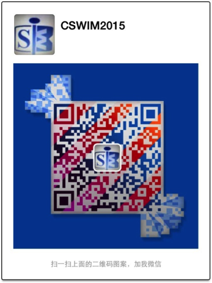

<?xml version="1.0" encoding="UTF-8"?><rss version="2.0"
	xmlns:content="http://purl.org/rss/1.0/modules/content/"
	xmlns:wfw="http://wellformedweb.org/CommentAPI/"
	xmlns:dc="http://purl.org/dc/elements/1.1/"
	xmlns:atom="http://www.w3.org/2005/Atom"
	xmlns:sy="http://purl.org/rss/1.0/modules/syndication/"
	xmlns:slash="http://purl.org/rss/1.0/modules/slash/"
	>

<channel>
	<title>News &#8211; CSWIM 2015</title>
	<atom:link href="http://2015.cswimworkshop.org/category/news/feed/" rel="self" type="application/rss+xml" />
	<link>http://2015.cswimworkshop.org</link>
	<description></description>
	<lastBuildDate>Sat, 28 Nov 2015 03:54:54 +0000</lastBuildDate>
	<language>en-US</language>
	<sy:updatePeriod>hourly</sy:updatePeriod>
	<sy:updateFrequency>1</sy:updateFrequency>
	<generator>https://wordpress.org/?v=4.4.10</generator>
	<item>
		<title>Welcome to CSWIM2015! Welcome to Hefei!</title>
		<link>http://2015.cswimworkshop.org/welcome/</link>
		<comments>http://2015.cswimworkshop.org/welcome/#respond</comments>
		<pubDate>Mon, 10 Nov 2014 19:26:19 +0000</pubDate>
		<dc:creator><![CDATA[cswim2015admin]]></dc:creator>
				<category><![CDATA[News]]></category>

		<guid isPermaLink="false">http://2015.cswimworkshop.org/?p=1</guid>
		<description><![CDATA[The conference proceedings can be download here. &#160; Venue Wi-Fi：CSWIM2015    Password：CSWIM2015 CSWIM2015 QQ Group：452082380          CSWIM2015 WeChat Group：CSWIM2015 QQ Group QR Code:                                     WeChat Group QR Code：               [&#8230;]]]></description>
				<content:encoded><![CDATA[<p style="text-align: left;"><strong>The conference proceedings can be download <a href="http://2015.cswimworkshop.org/wp-content/uploads/2014/11/CSWIM2015-Proceedings.pdf">here</a>.</strong></p>
<p style="text-align: left;">
<p style="text-align: left;">
<p>&nbsp;</p>
<p>Venue Wi-Fi：CSWIM2015    Password：CSWIM2015</p>
<p>CSWIM2015 QQ Group：452082380          CSWIM2015 WeChat Group：CSWIM2015</p>
<p>QQ Group QR Code:                                     WeChat Group QR Code：<br />
<a href="http://2015.cswimworkshop.org/wp-content/uploads/2015/06/image.jpg"></a>                                 </p>
<p>&nbsp;</p>
<p>The 9th China Summer Workshop on Information Management (CSWIM 2015) will be held in Hefei, China on June 27 and 28, 2015. It will be hosted by the <a href="http://www.hfut.edu.cn/">Hefei University of Technology</a>. The purpose of the workshop is to create a bridge to promote lively exchange and collaborations between information systems scholars in China and other countries, and to advance our understandings of how information systems and technologies affect individuals, businesses, organizations, and societies. The theme of CSWIM 2015 is “Data Science for Business Analytics.”</p>
<p>We welcome submissions of original research papers addressing issues concerning the theory, design, development, evaluation, and application of information systems and management. Since it is a research workshop, CSWIM encourages submissions of research-in-progress that are innovative and thought-provoking. Research articles particularly sought after are those driven by real-world business problems and validated with proper research methodologies.</p>
<div>For a list of topics of interest and submission instructions, see <a href="http://2015.cswimworkshop.org/submission/call-for-papers/">Call for Papers</a>.</div>
<p>&nbsp;</p>
<p><strong>Important dates:</strong><br />
Deadline for paper submission: April 1, 2015<br />
Notification of acceptance: May 12, 2015<br />
Deadline for final camera-ready version of accepted papers: May 29, 2015</p>
<p>&nbsp;</p>
<p><strong>Previous CSWIM Websites:</strong><br />
See CSWIM Main Website: <a href="http://www.cswimworkshop.org/">www.cswimworkshop.org</a></p>
]]></content:encoded>
			<wfw:commentRss>http://2015.cswimworkshop.org/welcome/feed/</wfw:commentRss>
		<slash:comments>0</slash:comments>
		</item>
	</channel>
</rss>
